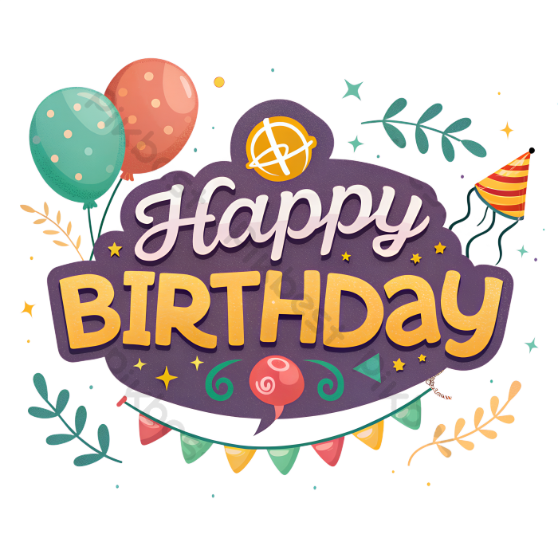
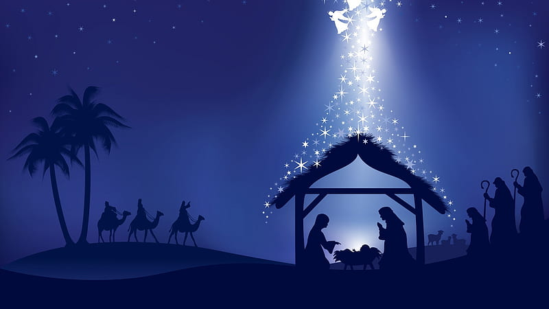
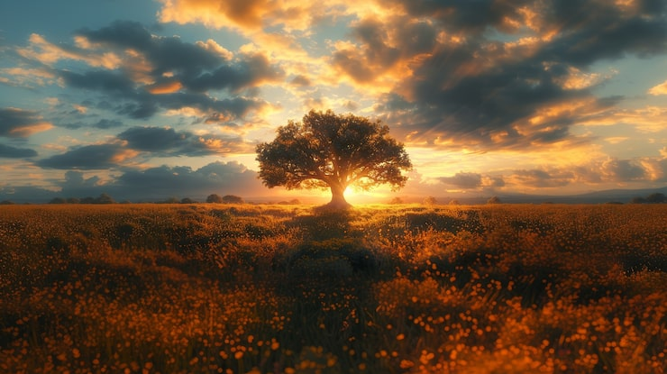
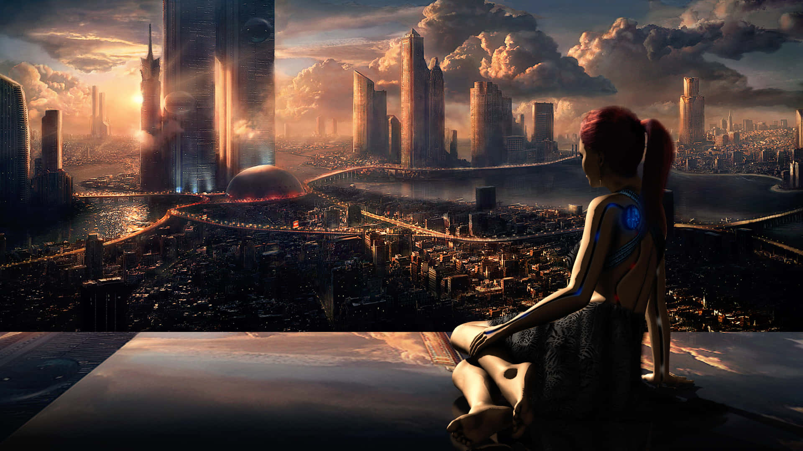

O maior evento do ano começa em:
O nascimento não é apenas a chegada física de uma nova vida ao mundo, mas o instante mágico em que o próprio universo renova suas promessas e se reinventa. Cada suspiro inicial carrega o peso invisível de incontáveis gerações passadas e, ao mesmo tempo, a leveza absoluta de um futuro inteiramente em branco. A nascer, recebemos a mais pura forma de liberdade: a oportunidade de transformar existência em significado e dar voz ao mistério da vida. É a prova viva de que a esperança nunca se esgota, pois a cada novo começo, o mundo ganha uma nova chance de amar e aprender.

A vida é um caminho cheio de desafios e descobertas. Cada dia traz novas oportunidades para crescer, aprender e se transformar. É o lugar onde as esperanças se tornam realidade e onde os sonhos ganham forma. A vida é um presente precioso que merece ser celebrado em cada momento, pois é nela que encontramos nosso propósito e significado.

Conquistas são os marcos que definem nossa jornada, os frutos do esforço, da dedicação e da perseverança. Cada vitória, seja grande ou pequena, é um testemunho da nossa capacidade de superar obstáculos e alcançar objetivos. As conquistas nos lembram de que somos capazes de transformar sonhos em realidade e que cada passo dado com coragem nos aproxima de nossos ideais. Celebrar nossas conquistas é reconhecer o valor do caminho percorrido e inspirar-nos a continuar avançando com determinação e confiança.
O futuro é um horizonte de possibilidades, um espaço onde a imaginação e a esperança se encontram. É o terreno fértil onde plantamos nossas aspirações e colhemos os frutos de nossas ações presentes. O futuro nos convida a sonhar, a inovar e a construir um mundo melhor, lembrando-nos de que cada decisão tomada hoje molda o amanhã. É uma promessa de novas experiências, aprendizados e oportunidades, desafiando-nos a sermos protagonistas da nossa própria história e a deixar um legado significativo para as gerações vindouras.
